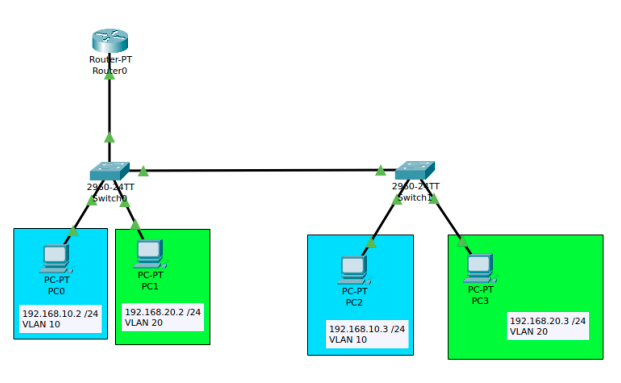

Switch Configuration
In this project, we configured a managed switch via console access, setting passwords for console, Telnet, and enable secret. We tested connectivity between virtual machines in different subnets and configured port security to disable ports when unauthorized devices connected.
Finally, we set up a network with two switches, a router, and four PCs in two subnets using access and trunk modes. We submitted a network diagram, IP plan, VLAN configuration, switch settings, and screenshots showing successful connectivity between devices.
Technologies Used:
-
Cisco
